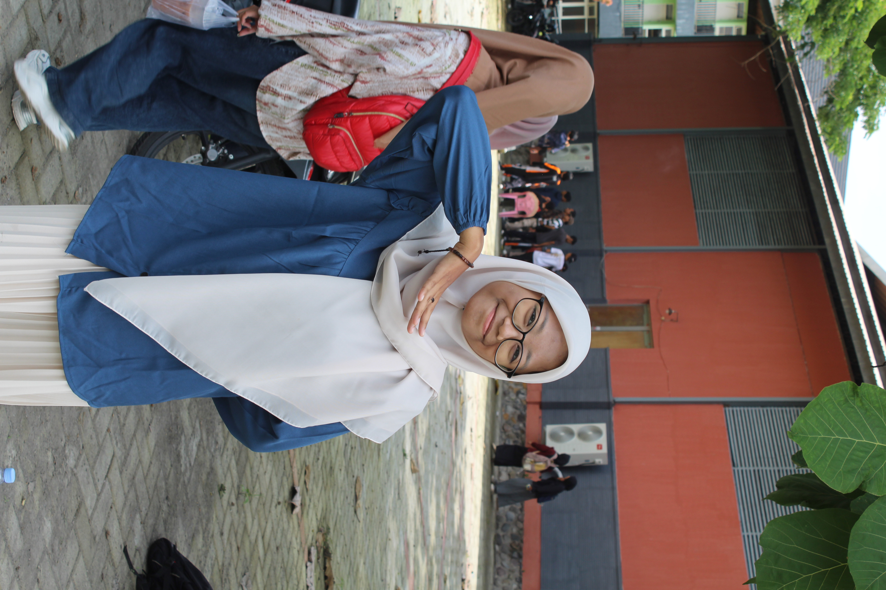

🎥 Video Pendukung / Favorit
Berikut adalah media berupa film kartun favorit saya:

Mahasiswa Sistem Informasi yang sedang belajar, berusaha, dan terus berkembang walaupun kadang berkembangnya sambil ngeluh 😁
HAOOO! Saya Jihan Zuhairiyah. Saya adalah mahasiswa Sistem Informasi yang sedang berusaha menjalani kehidupan perkuliahan sambil belajar berbagai hal baru. Bagiku, menjadi mahasiswa bukan cuma tentang mengerjakan tugas dan mengejar nilai, tetapi juga tentang belajar mengatur waktu, menghadapi masalah, dan mencoba menjadi versi diri yang lebih baik.
Di luar kegiatan kuliah, saya juga mengurus dan mengembangkan usaha orang tua saya, dimana saya diberi amanah sebagai admin di toko botol plastik dan perlengkapan laundry.
Berikut adalah media berupa film kartun favorit saya:
| Hal yang Menemaniku di Waktu Luang | |
|---|---|
| Film Favorit | Novel Favorit |
| 1. Obsession | 1. Cantik itu Luka |
| 2. Purple Heart | 2. Canva |
| 3. Teach You a Lesson | 3. Agatha |
Silakan tinggalkan pesan atau sapaan melalui formulir interaktif di bawah ini: